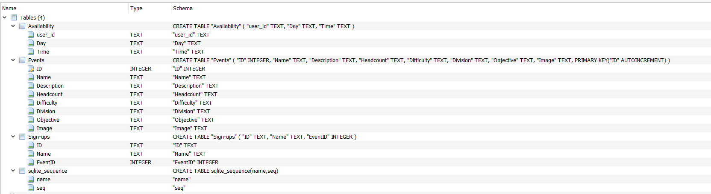
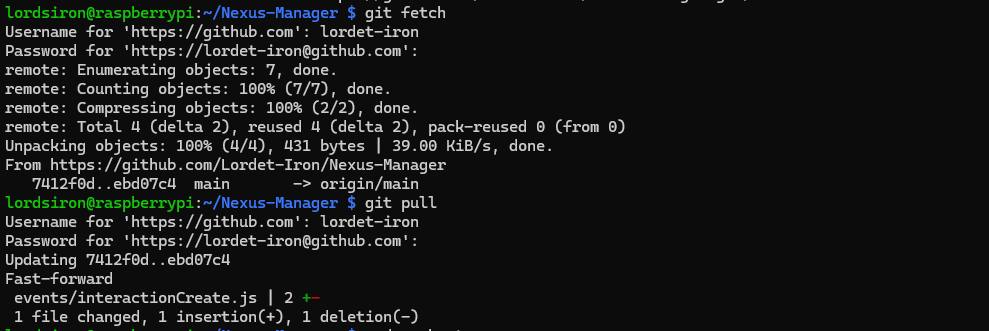
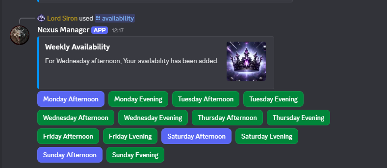

Nexus Manager
Project Type: Discord Bot Development
Software Used: Visual Studio Code
Languages Used: Python, SQL
Nexus Manager is a scheduling assistant built for my growing Dungeons & Dragons community with increasingly complex player availability. It provides a streamlined way to create events, allow players to register interest, and automatically match availability so sessions can be organised quickly and reliably.
Why use Discord as the Front End
Since the entire community operates inside Discord, placing the interface elsewhere would add unnecessary friction. Using the Discord Bot API lets players interact with the system naturally, without leaving the platform. It also enables automated actions, such as creating group chats and sending updates directly to our Discord server.

Why Use SQL
Initially, I considered JSON for storing event and user data, but SQL proved more suitable after prototyping. It allows efficient querying, such as filtering user availability by day, while ensuring data consistency and integrity.
Why a Raspberry Pi for Hosting
To start with, I hosted the bot on my personal machine, but uptime was limited and running a full Windows instance all day was costly. After evaluating cloud options, I chose a Raspberry Pi for its low running costs and 24/7 reliability.
Challenge Moments
User Friendly Design
The first version of the availability system required users to run multiple commands whenever their availability changed. Feedback from friends led to a rework into a visual, button driven interface, which was far more intuitive. This experience reinforced the importance of user feedback in the development lifecycle.
Raspberry Pi Deployment
This was my first experience with the Raspberry Pi. Setting up SSH and deploying the bot presented challenges, but it taught me valuable lessons about alternative operating systems and low-end deployment.
Key Accomplishments
- Created a user friendly interface via a Discord Bot.
- Created a SQL database to store user data.
- Created commmands to see availability of users and book sessions.
- Implemented error handling and data validation for reliability.
- Created commands to matchmake users based on availability.
- Created commands to publish events to users to sign up to.
- Setup a Raspberry Pi to host the bot 24hrs/day.
- Setup SSH access to the Raspberry Pi for remote updates and maintenance.